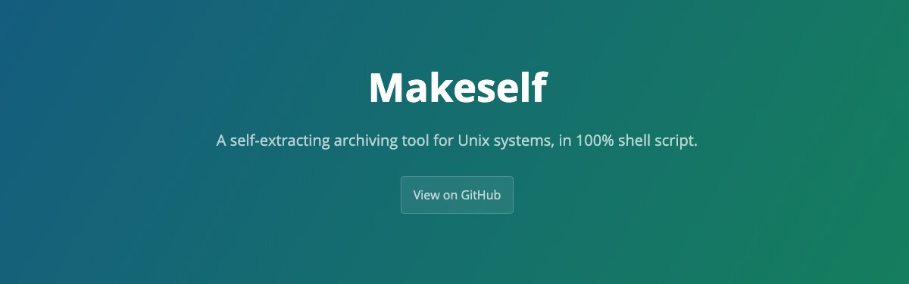

适用于在
Unix系统上制作自解压归档文件 => 官网地址
Makeself 是一个小巧而精致的 Shell 工具，用于将程序或者镜像文件(其实你可以做的更多)等打包成为一个可执行的 .run 包，来便捷的安装或者导入。

1. 自解原理
使用 SHELL 来理解自解压工具的原理！
在 Linux 系统下，使用最为基本的几个 Shell 命令就可以完成一个简陋的自解压工具。而其原理就是，利用 cat 命令或追加的方式(>>)将两个文件连接起来，前者是一个 Shell 脚本，负责执行解压和安装的操作，而后者则是一个压缩包文件，其包含需要解压和安装的程序本身。这样这个拼接起来的新文件(前面是解压脚本，后面是压缩包)就具有自动解压和安装的功能了。这里比较重要的一点，就是如何知道执行脚本文件和压缩包文件的分割点，这样才能完整的执行了脚本而且不会损害压缩包文件内容(这里可以通过 tail -n 命令简单实现)。
新的自解压程序的执行逻辑，如下所示：
- 执行自解压程序中的
Shell脚本 - 把自解压程序后面的部分进行解压和安装等操作
- 完毕之后退出程序
下面，我们就通过自制一个建议的自解压程序来了解其运作过程和原理吧！
prefix.sh-> 引导脚本install.sh-> 解压脚本nginx.tar.gz-> 压缩包文件
# ----------------------
# prefix.sh
# ----------------------
#!/bin/bash
echo "Nginx Tool Self Extracting Installer"
export CUR_DIR=$(pwd)
export TMP_DIR=$(mktemp -d /tmp/selfextract.XXXXXX)
ARCHIVE_LINE=$(awk '/^__ARCHIVE_BELOW__/ {print NR + 1; exit 0; }' "$0")
tail -n+${ARCHIVE_LINE} "$0" | tar -zvx -C ${TMPDIR} &> /dev/null
cd ${TMP_DIR}
./install.sh
cd ${CUR_DIR}
rm -rf ${TMP_DIR}
exit 0
__ARCHIVE_BELOW__
#BB!!!#���-@Q#B!!!Q#���-@p�
# ----------------------
# __ARCHIVE_BELOW__
# ----------------------
$ tree .
|_ ./README
|_ ./install.sh
|_ ./nginx.xxx.xxx.rpm
|_ ......
# 制作安装包
# 使用cat命令把两个文件拼接在一起
$ cat install.sh nginx.tar.gz > nginx_installer.run
$ chmod +x nginx_installer.run
2. 工具介绍
Make self-extractable archives on Unix.
makeself.sh 是一个从目录生成自解压压缩 tar 存档的小工具，通常使用 .run 作为默认后缀。makeself.sh 按照如下方式运行：归档文件将解压缩到临时目录(默认是 /tmp 目录)，并执行可选的任意命令或者脚本(通常会是安装脚本)。 这与 Windows 中常用的 WinZip 自解压缩工具的生成的存档非常类似。Makeself 存档还包括完整性自我验证(CRC/MD5/SHA256)的校验和。
makeself.sh 脚本本身仅用于从文件目录创建存档，最终归档实际上是一个压缩( 使用gzip/bzip2/compress压缩)的TAR归档。同时，在开头有一个较小的 Shell 脚本，执行这个 Shell 脚本来提取文件，运行嵌入式命令并在完成时删除临时文件。 makeself.sh 工具不依赖任何 Bash 特性，只需要调用就可以在任何类 Unix 操作系统上面运行。
# 下载工具
$ wget https://github.com/megastep/makeself/releases/download/release-2.4.2/makeself-2.4.2.run
# 解压安装
$ bash makeself-2.4.2.run; cd makeself-2.4.2
$ sudo cp makeself.sh /usr/bin/makeself
3. 语法格式
主要介绍 makeself 工具的使用方式和常用参数介绍！
# The syntax of makeself is the following
$ makeself.sh [args] archive_dir file_name label startup_script [script_args]
- [1] makeself 打包命令可选参数
| 参数 | 参数使用说明 |
|---|---|
--version |
打印版本号 |
--needroot |
需要root用户才可以执行 |
--gzip |
默认使用gzip工具进行压缩 |
--pigz |
gzip的多线程解决方案 |
--bzip2 |
使用bzip2代替gzip进行更好的压缩 |
--pbzip2 |
bzip2的多线程解决方案 |
--xz |
使用xz代替gzip进行更好的压缩(远程支持多线程压缩) |
--zstd |
使用zstd代替gzip进行更好的压缩 |
--threads thds |
限制支持多线程解压缩工具所使用的线程数量 |
--base64 |
用Base64格式将存档编码为ASCII格式而不进行压缩 |
--gpg-encrypt |
使用gpg -ac -z $COMPRESS_LEVEL加密归档文件，需要输入密码 |
--ssl-encrypt |
使用openssl aes-256-cbc -a -salt加密归档文件，需要输入密码 |
--ssl-passwd pass |
设置openssl加密归档文件需要输入的密码 |
--compress |
使用UNIX系统的compress`命令压缩数据(在没有 gzip 时默认) |
--nocomp |
不对存档文件进行压缩，默认是一个tar包 |
--complevel lvl |
指定压缩级别，默认使用9级别 |
--notemp |
生成的归档文件不会将文件解压缩到临时目录，而解压到当前目录的创建的新目录中 |
--current |
文件将被提取到当前目录，而不是子目录中(同--notemp一样，但会提取没有文件夹) |
--follow |
存储指向的文件而不是链接本身 |
--append file |
将数据追加到现有存档中，而不是创建新文件 |
--header file |
使用指定的脚本来代替默认的makeself-header.sh文件(默认与makeself文件同级) |
--cleanup file |
指定在执行中断或成功完成时运行的脚本 |
--nomd5/--nocrc |
禁止检查存档文件的MD5或CRC校验和 |
--tar-extra opt |
在tar命令行中附加更多选项 |
--keep-umask |
保持umask设置为shell默认值，而不是在执行自解压缩存档时覆盖 |
--packaging-date date |
使用提供的字符串作为打包日期而不是当前日期 |
--license |
附加许可证文件 |
--nooverwrite |
如果指定的目标目录已经存在则不要解压缩存档 |
--header file |
指定头部信息脚本文件的位置，默认为makeself-header.sh文件 |
--help-header file |
在存档的--help输出中添加标题 |
--export-conf |
将配置变量导出到startup_script脚本中 |
# 在tar命令行中附加更多选项，例如
$ makeself.sh --tar-extra "--exclude=.git"
- [2] ARGS - 需要注意的选项
| 选项 | 说明 |
|---|---|
archive_dir |
包含要归档的文件的目录的名称 |
file_name |
要创建的存档名称 |
label |
描述存档包的任意描述并在解压的时候显示 |
startup_script |
解压后要执行的脚本，需指定./在当前目录执行 |
[script_args] |
startup_script脚本的附加参数 |
# 生成名为mysoft.sh的自解压包
# 在/home/joe/mysoft目录中存储了setup.sh动脚本
$ makeself.sh /home/joe/mysoft mysoft.sh "Joe's Nice Software Package" ./setup.sh
# 包含Makeself分发的makeself.run归档文件
$ makeself.sh --notemp makeself makeself.run \
"Makeself by Stephane Peter" echo "Makeself has extracted itself"
- [3] ARGS - 解包的可选参数
| 参数 | 参数使用说明 |
|---|---|
--keep |
文件将被提取到当前工作目录中并将一直保留到您删除它们为止 |
--verbose |
在执行嵌入式脚本之前将提示用户 |
--target dir |
允许在任意指定目录解压run包 |
--confirm |
在执行嵌入式脚本之前将提示用户是否需要执行 |
--info |
打印出有关run包的常规信息 |
--list |
列出档案中的文件 |
--check |
校验和检查归档文件的完整性 |
--nochown |
默认情况下提取后在目标目录上运行chown -R命令以便所有文件都属于当前用户 |
--tar |
使用以下参数作为tar命令的参数 |
--noexec |
提取后不要运行嵌入式脚本 |
--nodiskspace |
在提取之前不检查可用的磁盘空间 |
--noexec-cleanup |
在提取之前不支持指定的删除脚本 |
root@ele:/data/# bash redis_latest.run --help
Makeself version 2.2.0
1) Getting help or info about redis_latest.run :
redis_latest.run --help Print this message
redis_latest.run --info Print embedded info : title, default target directory, embedded script ...
redis_latest.run --lsm Print embedded lsm entry (or no LSM)
redis_latest.run --list Print the list of files in the archive
redis_latest.run --check Checks integrity of the archive
2) Running redis_latest.run :
redis_latest.run [options] [--] [additional arguments to embedded script]
with following options (in that order)
--confirm Ask before running embedded script
--quiet Do not print anything except error messages
--noexec Do not run embedded script
--keep Do not erase target directory after running the embedded script
--noprogress Do not show the progress during the decompression
--nox11 Do not spawn an xterm
--nochown Do not give the extracted files to the current user
--target dir Extract directly to a target directory directory path can be either absolute or relative
--tar arg1 [arg2 ...] Access the contents of the archive through the tar command
-- Following arguments will be passed to the embedded script
4. 实例说明
- 打包命令
...
# create makeself file
# makeself --gzip --notemp --follow ./packages ./packages.run "SFX installer for program" ./install.sh
$ chmod 755 /tmp/${archive_dir}/${install_name}
$ makeself --gzip --follow /tmp/${archive_dir} ${dir_name}/${makeself_name} \
"${commit_message}" ./${install_name}
...
5. 并行优化
在
v2.4.2这个版本中，新增了关于解压缩多线程的支持！
- 以下源码中显示了支持多线程解压缩的工具种类，主要有
pigz、pbzip2和xz可供选择和使用。有一个好消息就是，pigz包默认包含在Debian和CentOS的发行版的官方存储库中。
case $COMPRESS in
pigz)
GZIP_CMD="pigz -$COMPRESS_LEVEL"
if test $THREADS -ne $DEFAULT_THREADS; then # Leave as the default if threads not indicated
GZIP_CMD="$GZIP_CMD --processes $THREADS"
fi
GUNZIP_CMD="gzip -cd"
;;
pbzip2)
GZIP_CMD="pbzip2 -c$COMPRESS_LEVEL"
if test $THREADS -ne $DEFAULT_THREADS; then # Leave as the default if threads not indicated
GZIP_CMD="$GZIP_CMD -p$THREADS"
fi
GUNZIP_CMD="bzip2 -d"
;;
xz)
GZIP_CMD="xz -c$COMPRESS_LEVEL"
# Must opt-in by specifying a value since not all versions of xz support threads
if test $THREADS -ne $DEFAULT_THREADS; then
GZIP_CMD="$GZIP_CMD --threads=$THREADS"
fi
GUNZIP_CMD="xz -d"
;;
esac